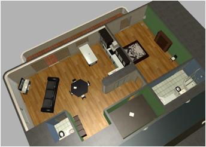

Assignment 1 - Follow the path
In this assignment, you are to write a controller program that can guide a robot in a simulated environment, such that it follows a pre-specified path. The path is given as a sequence of coordinates, and your program should use the robot's sensors (a position sensor and optionally a laser scanner) in order to reproduce the given path.
This assignment will be presented in the lab, and the goal is to produce a controller that can track the given path and reach the goal as quickly as possible. A competition will take place at the demonstration, but you do not have to participate if you dont want to. It is enough to follow the path from start to finish to get a passing grade, regardless of how long time it takes.
The assignment is solved in groups of two students.
Task
- Implement a program that interacts with the Kompai robot in MRDS. This involves implementing functions for reading the robot's sensors and controlling the robot's actuators.
- Implement a controller that enables the robot to follow a specified path given as a sequence of coordinates. Small divergences from the specified path are allowed, but the controller must be able to steer the robot back onto the path when divergences from the path occur.
- The controller must be able to successfully track a few test paths, without hitting walls and other obstacles. You may use these paths as examples, or record your own (see below).
- Your program should include some means of displaying the time taken from start to finish. The start is defined as the moment the robot starts moving, and finish is defined as the moment the robot is within 1 meter of the last point in the path.
-
NOTE: Important
We recommend that you implement the controller using Follow the carrot or Pure Pursuit, as described in Chapter 4 of Barton's thesis.
You may alter either one of these algorithms to improve them, or design your own algorithm. Note that the algorithm must use some kind of lookahead distance, i.e. it is not allowed to just move between the given coordinates one by one, the robot must look beyond the closest point and 'aim' further along the path, in essence 'skipping' (a lot of the) coordinates. Thus it is not necessary to follow the path exactly, indeed this is the fundamental problem - how to follow the path close enough to avoid obstacles, but otherwise move as fast as possible. The path must be followed in a 'topological sense', i.e. if the path goes around a table the robot must go around it too. - Optional: Use data from the laser scanner and implement an obstacle avoidance algorithm, helping the robot to pass though doors and other tight passages. It will be possible to solve the assignment without this part, but you will be able to run faster when using the obstacle avoidance.
- There will be a competition during the presentation of the programs that you may take part in if you want to. The aim of the competition is to traverse an (unknown) path from start to finish in as short a time as possible. The competition is entirely volountary, and the result does not affect your grade in any way.
Microsoft Robotics Developer Studio 4
For this assignment, Microsoft Robotics Developer Studio 4 (MRDS) will be used as a simulation environment for a robot. The simulated robot is a Robosoft Kompai robot. The controller program you write will control the simulated robot through an HTTP interface.

Installing MRDS
MRDS is available in all the windows labs. Run it by executing c:/MRDS4/store/launchers/StartLokarria.bat. If you wish, you can also install MRDS on your own Windows computer. MRDS is unfortunately not available for Linux and Mac.
Please follow these steps in order to install MRDS.
- Download MRDS from www.microsoft.com/robotics.
- Install MRDS. We recommend that you choose Custom installation and change the default installation directory to c:\MRDS4.
- When MRDS is installed, select Microsoft Robotics Developer Studio 4 from the start menu and select the choice Build all samples. The shell command may produce a few errors or warnings, usually nothing to worry about.
- When compilation is finished, you may test that MRDS is working by running one of the example environments from the folder Visual Simulation Environments on the start menu.
- Download and unpack
MRDS4-Patch.zip.
- Before unpacking the file, it must be unlocked. Right click on the zip file and select Properties. In the Properties dialog, at the bottom, there will be an "unblock" button; click it and then extract the file.
- Copy the files in the MRDS Installation Files-folder to your MRDS directory, overwrite any existing files.
- Run MRDS by executing store/launchers/StartLokarria.bat in your MRDS installation directory.
- MRDS should print a security warning in the console, and start a 3D simulation environment and a map-view.
- MRDS may however also display the message *** Initialization failure: Could not start HTTP Listener, in that case you must grant permission for MRDS to open the specified http port. See Point 4 in the Microsoft MRDS getting started guide for details. You may also run MRDS as administrator in order do avoid this problem.
- Visit localhost:50000 to access the MRDS HTTP interface.
Using MRDS
Controlling the robot
When MRDS has been started (see above) you should see a 3D view, a map view and a small window with a joystick. Navigate the 3D view by using the arrow keys (hold down shift in order to increase the movement speed of the camera).
Since MRDS may connect to a real, physical, robot, the joystick interface is intentionally non-intuitive. In order to control the robot, you must click the "Sticky Buttons" box and press 0. After that, the robot can be controlled by clicking and dragging the joystick wheel.
Accessing the HTTP interface
With MRDS running, visit http://localhost:50000. This should show a page with the title Microsoft Robotics Home. If this page displays, MRDS is running. Now you can access the http interface that will be used to interact with the robot. A full specification of the http interface (named Lokarria) is found in the RobuBox manual, section 5.4.
- http://localhost:50000/lokarria/laser/echoes
Returns the current laser scan in JSON format. Each scan includes 271 distances from the center of the robot to the closest obstacle, in different directions. The scan also includes any overflows and reflectors, these can usually be ignored (see the RobuBox manual for details). Note that the reflector of the laser rotates counter-clockwise, such that the first item in the laser scan corresponds to the rightmost beam. Read the manual carefully. - http://localhost:50000/lokarria/laser/properties
Returns information about the laser configuration, such as angle between each laser beam in the scan. This information usually does not change and may hence be read only once at program startup. - http://localhost:50000/lokarria/differentialdrive
This interface is used both to read the current speed of the robot and to set a new speed. A normal GET request (usually made by the webbrowser by default) will return the current speed, while a POST is used to set the speed. The chrome application Postman may be used to test sending commands to the robot. - http://localhost:50000/lokarria/localization
Used to find the current pose (position and orientation) of the robot. Note that the orientation is given as a Quaternion and may be difficult to interpreet directly. See the RobuBox manual for details.
MRDS provides several other http interfaces, get a complete list by visiting http://localhost:50000 and selecting Service directory.
Generating log files
Loggs hare generated using a Google Chrome Web App named MRDS Log Client. In order to install the webapp, download ChromeMRDS.crx from Course Material. In Chrome, open Tools -> Extentions, then drag and drop the downloaded file into the Chrome Window. Chrome will ask you if you wish to install the addon, select yes and you're good to go. The web app can be started from the program section of a New Tab window in Chrome.
Implementation
You can implement your solution to this assignment in one of the following languages: Python, Java, JavaScript, C, C++, C#, or Matlab. If you want to use another language, please ask the teacher for permission. Note that the program must run on the Windows computers in our labs. You are allowed to use most extension modules, but please ask for permission before doing so. Remember to include the timing code.
All languages listed above has builtin modules for using the http protocol. Under course material you can find a simple example written in Python.
What to hand in
You should hand in a well-written report and a zipped archive of your code in Cambro.
The report may be brief but it is important that you fulfill the following requirements:
-
Describes how your solution works on a level that does not lose interesting details. Make some sensible breakdown into headings
- Most important is that you describe how your path tracking algorithm works. Do not simply use the textbook formulations but describe it more precise, such that it would be possible for the reader to implement exactly the same path tracking. You are encouraged to illustrate using pictures
- Describe how to compile and run your program and how outputs from the program should be interpreted.
- The repost must have a title page including names of group members, your username at computing science, course name, course code, assignment name, and the teachers name.
- Describe how your work went and which problems and issues you faced when developing the program.
- Use clear, well written english or swedish language
- Include your source code in the report, formatted using Courrier New or similar
The source code should align to the following:
- Comment the code in a sensable way, follow JavaDoc, PyDoc if existing for the language you use
- Structure your code in a suitable way, such that it is easy to follow that is going on
- Name classes, variables, methods, modules, etc. such that the names clearly describe their function
- The code you hand in should not contain sections that are not used, or unnecessary. Make sure that you understand every part of the code you hand in.
Obligatory presentation
In order to pass the assignment, your solution is to be presented in the computer lab, at the specified time in the schedule.